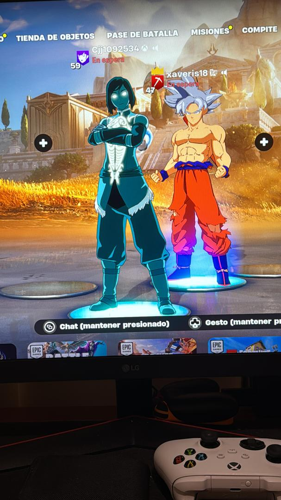

Para Javier
El grupo que formamos
Todo lo que compartimos
- Fortnite
- League of Legends
- Real Madrid
- Fútbol
- Champions
- Hércules
- Príncipe de Egipto
- La Merced
- La UCAB
- Los recreos
- El grupo
- Los chistes
- La dinámica
- La amistad
- El grupo
- Toda una vida
Así nos recomponemos.
"¿No se puede repetir el pasado?"
¿Cómo que no? Claro que se puede.
— F. Scott Fitzgerald, El Gran Gatsby
Esa luz al final del muelle siempre fuiste tú.
"Ojalá hubiera una forma de saber que estás
en los buenos viejos tiempos
antes de que terminen.
Yo ya sé que los nuestros lo eran."

Mensajes que nunca llegaron
de silencio
Cada día que pasó fue una escena que no viste con nosotros.
Esto es lo que queríamos haberte dicho.
No tengo manera de escribirte desde hace más de año y medio. Así que decidí hacer esto.
Vengo a decirte que te extraño y que siempre he estado abierto a hablar.
Quiero que sepas que te recuerdo con todo el cariño del mundo.
Lo único que pido es la oportunidad de hablar contigo.
pto, once años en el mismo colegio. Hércules. El Príncipe de Egipto. Cada recreo, cada año. No es fácil fingir que eso no existió.
No te escribo para debatir nada ni para convencerte de nada. Te escribo porque te extraño, así de simple. Extraño a mi pana de toda la vida.
Si algún día quieres sentarte a hablar — sin presiones, cuando tú quieras — yo voy a estar. Siempre.
Donde todo empezó
Habbo Hotel
Toca una baldosa para mover a los personajes
金継ぎ
El arte japonés de reparar con oro
"Lo que se rompe y se une con oro
no vuelve a ser lo mismo —
vale más."
Nuestra amistad no tiene que ser igual a la de antes.
Puede ser más hermosa gracias a todo lo que hemos vivido.